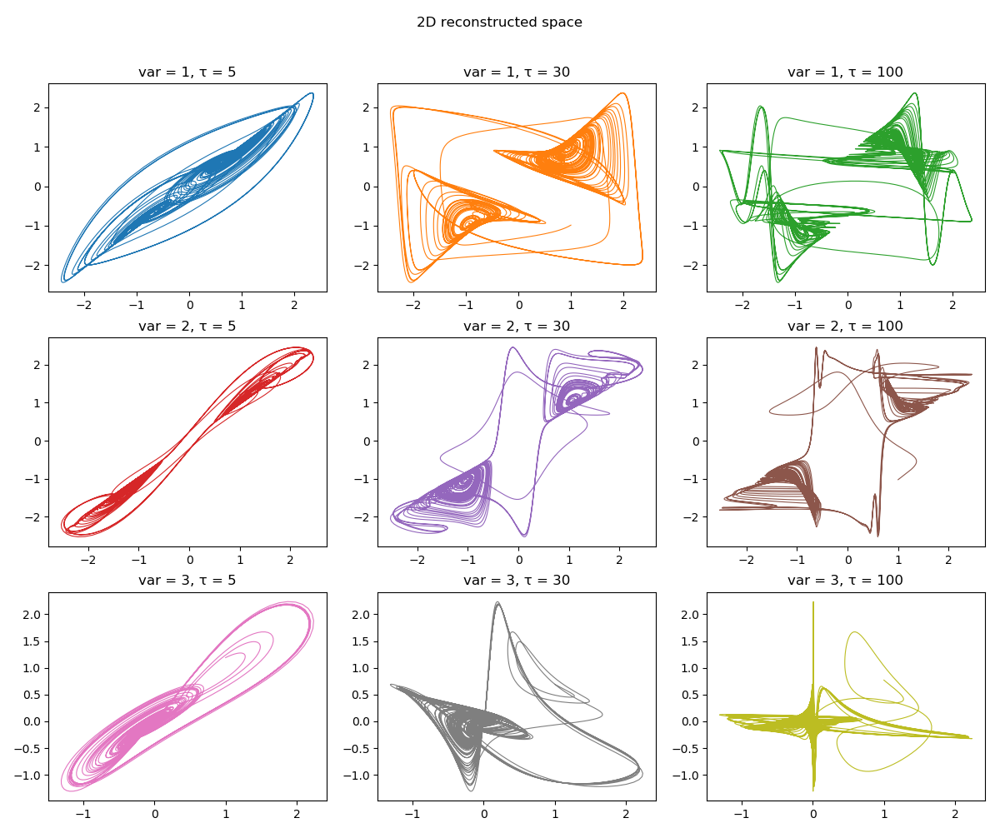

Delay Coordinates
A timeseries recorded in some manner from a dynamical system can be used to gain information about the dynamics of the entire phase-space of the system. This can be done by reconstructing a new phase-space from the timeseries. One method that can do this is what is known as delay coordinates embedding or delay coordinates reconstruction.
Reconstruct/Embed
Delay embedding reconstructions are done through reconstruct or embed:
#
DelayEmbeddings.reconstruct — Function.
reconstruct(s, γ, τ)
Reconstruct s using the delay coordinates embedding with γ temporal neighbors and delay τ and return the result as a Dataset.
See embed for the version that accepts the embedding dimension D = γ+1 directly.
Description
Single Timeseries
If τ is an integer, then the n-th entry of the embedded space is
If instead τ is a vector of integers, so that length(τ) == γ, then the n-th entry is
The reconstructed dataset can have same invariant quantities (like e.g. lyapunov exponents) with the original system that the timeseries were recorded from, for proper γ and τ. This is known as the Takens embedding theorem [1, 2]. The case of different delay times allows reconstructing systems with many time scales, see [3].
Notice - The dimension of the returned dataset (i.e. embedding dimension) is γ+1!
Multiple Timeseries
To make a reconstruction out of a multiple timeseries (i.e. trajectory) the number of timeseries must be known by type, so s can be either:
s::AbstractDataset{B}s::SizedAray{A, B}
If the trajectory is for example (x, y) and τ is integer, then the n-th entry of the embedded space is
If τ is an AbstractMatrix{Int}, so that size(τ) == (γ, B), then we have
Notice - The dimension of the returned dataset is (γ+1)*B!
References
[1] : F. Takens, Detecting Strange Attractors in Turbulence — Dynamical Systems and Turbulence, Lecture Notes in Mathematics 366, Springer (1981)
[2] : T. Sauer et al., J. Stat. Phys. 65, pp 579 (1991)
[3] : K. Judd & A. Mees, Physica D 120, pp 273 (1998)
#
DelayEmbeddings.embed — Function.
embed(s, D, τ)
Perform a delay coordinates embedding on signal s with embedding dimension D and delay time τ. The result is returned as a Dataset, which is a vector of static vectors.
See reconstruct for an advanced version that supports multiple delay times and can reconstruct multiple timeseries efficiently.
Here are some examples of reconstructing a 3D continuous chaotic system:
using DynamicalSystems, PyPlot ds = Systems.gissinger(ones(3)) data = trajectory(ds, 1000.0, dt = 0.05) xyz = columns(data) figure(figsize = (12,10)) k = 1 for i in 1:3 for τ in [5, 30, 100] R = reconstruct(xyz[i], 1, τ) ax = subplot(3,3,k) plot(R[:, 1], R[:, 2], color = "C$(k-1)", lw = 0.8) title("var = $i, τ = $τ") global k+=1 end end tight_layout() suptitle("2D reconstructed space") subplots_adjust(top=0.9)

τ and dt
Keep in mind that whether a value of τ is "reasonable" for continuous systems depends on dt. In the above example the value τ=30 is good, only for the case of using dt = 0.05. For shorter/longer dt one has to adjust properly τ so that their product τ*dt is the same.
You can also reconstruct multidimensional timeseries. For this to be possible, the number of timeseries must be known by Type:
using StaticArrays: Size a = rand(1000, 3) # my trajectory A = Size(1000, 3)(a) # create array with the size as Type information R = reconstruct(A, 2, 2) #aaaall good
9-dimensional Dataset{Float64} with 996 points 0.054502 0.826439 0.135553 … 0.39143 0.310166 0.370603 0.639211 0.414527 0.55877 0.979642 0.502998 0.465613 0.171316 0.0841454 0.363251 0.345203 0.336887 0.906889 0.717075 0.784564 0.16234 0.782596 0.312001 0.628767 0.39143 0.310166 0.370603 0.0336188 0.148752 0.85327 0.979642 0.502998 0.465613 … 0.883052 0.577202 0.27189 0.345203 0.336887 0.906889 0.515897 0.433953 0.50353 0.782596 0.312001 0.628767 0.488023 0.19643 0.997044 0.0336188 0.148752 0.85327 0.0614884 0.509386 0.528218 0.883052 0.577202 0.27189 0.417898 0.25669 0.0793331 ⋮ ⋱ 0.080455 0.135499 0.35817 0.721946 0.893601 0.32365 0.504001 0.900806 0.217099 0.244439 0.743023 0.407145 0.00836735 0.675967 0.176169 0.709889 0.878236 0.391053 0.0951728 0.748783 0.776681 0.886417 0.716448 0.429042 0.721946 0.893601 0.32365 … 0.714942 0.267734 0.919564 0.244439 0.743023 0.407145 0.63069 0.980046 0.912266 0.709889 0.878236 0.391053 0.170436 0.841912 0.302581 0.886417 0.716448 0.429042 0.674132 0.672273 0.195279 0.714942 0.267734 0.919564 0.457574 0.12547 0.829726
ds = Systems.towel(); tr = trajectory(ds, 10000) R = reconstruct(tr, 2, 2) # Dataset size is also known by Type!
9-dimensional Dataset{Float64} with 9997 points 0.085 -0.121 0.075 … 0.837347 0.0372633 0.555269 0.285813 -0.0675286 0.238038 0.51969 0.0616256 0.940906 0.76827 -0.038933 0.672094 0.966676 -0.00171595 0.2225 0.681871 0.0508933 0.825263 0.112748 0.0674955 0.653573 0.837347 0.0372633 0.555269 0.386547 -0.0886542 0.869349 0.51969 0.0616256 0.940906 … 0.910741 -0.0316828 0.411607 0.966676 -0.00171595 0.2225 0.306095 0.0689305 0.909129 0.112748 0.0674955 0.653573 0.824263 -0.056185 0.326064 0.386547 -0.0886542 0.869349 0.545332 0.0508239 0.819404 0.910741 -0.0316828 0.411607 0.954994 0.00453815 0.569534 ⋮ ⋱ 0.914702 -0.0315439 0.294266 0.90246 0.0242141 0.539502 0.289932 0.0641239 0.778698 0.335976 0.0735803 0.943945 0.793854 -0.0552801 0.664223 0.86657 -0.0497658 0.214728 0.62671 0.0557527 0.832001 0.430816 0.0535742 0.62743 0.90246 0.0242141 0.539502 … 0.936955 -0.0200112 0.894333 0.335976 0.0735803 0.943945 0.237481 0.0983265 0.353212 0.86657 -0.0497658 0.214728 0.681538 -0.0476555 0.883219 0.430816 0.0535742 0.62743 0.836353 0.0363264 0.380351 0.936955 -0.0200112 0.894333 0.515471 0.0534613 0.898152
Embedding Functors
The high level functions embed, reconstruct utilize a low-level interface for creating embedded vectors on-the-fly. The high level interface simply loops over the low level interface. The low level interface is composed of the following two structures:
#
DelayEmbeddings.DelayEmbedding — Type.
DelayEmbedding(γ, τ) -> `embedding`
Return a delay coordinates embedding structure to be used as a functor, given a timeseries and some index. Calling
embedding(s, n)
will create the n-th reconstructed vector of the embedded space, which has γ temporal neighbors with delay(s) τ. See reconstruct for more.
Be very careful when choosing n, because @inbounds is used internally.
#
DelayEmbeddings.MTDelayEmbedding — Type.
MTDelayEmbedding(γ, τ, B) -> `embedding`
Return a delay coordinates embedding structure to be used as a functor, given multiple timeseries (B in total), either as a Dataset or a SizedArray), and some index. Calling
embedding(s, n)
will create the n-th reconstructed vector of the embedded space, which has γ temporal neighbors with delay(s) τ. See reconstruct for more.
Be very careful when choosing n, because @inbounds is used internally.